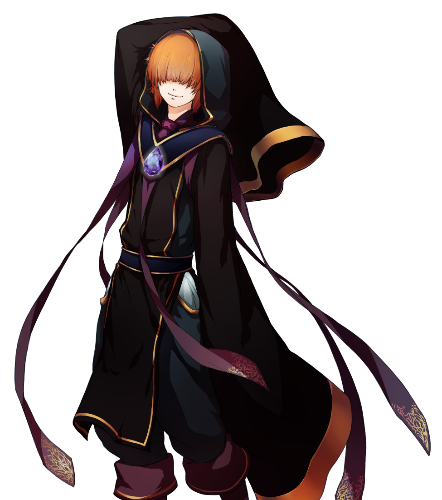

O caminho da ponte quebrada...

Aghamora, devido aos seus poderes mágicos, resolve voltar a Àrtia pelo caminho da ponte quebrada.
Ao atravessa-la, se depara com Zu - o feiticeiro maluco. Zu é conhecido por ter roubado o Cristal do Templo de Zahr,
item que lhe concede poderes mágicos.
Escolha uma alternativa:
1 - Criar uma ilusão para distraí-lo e roubar o cristal
2 - Tentar fugir